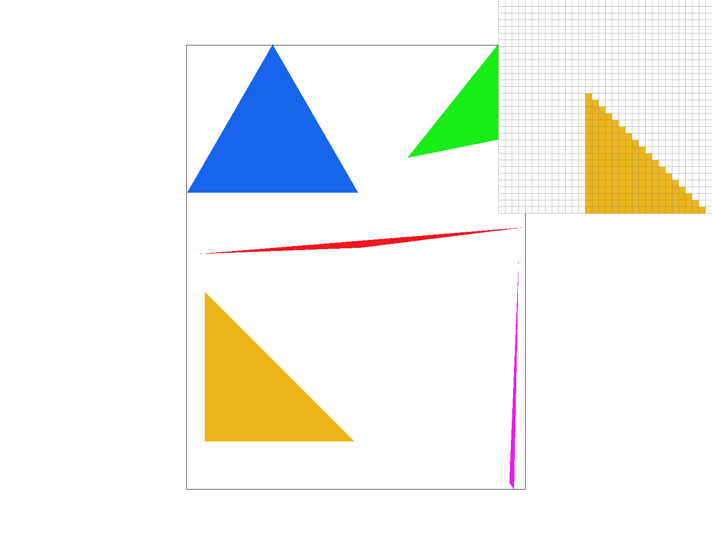
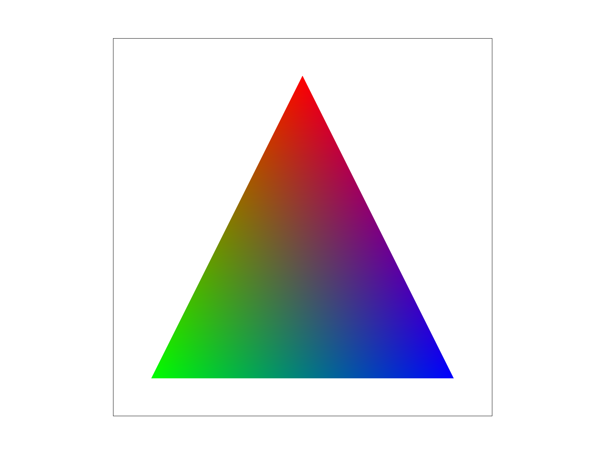
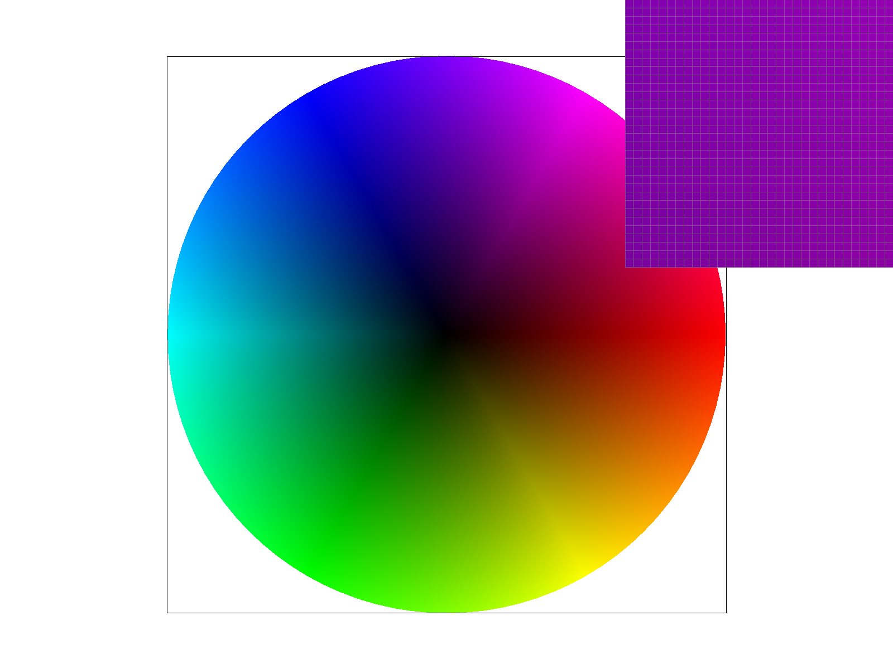

This assignment was a software rasterizer: drawing triangles, antialiasing with supersampling, applying SVG transforms, interpolating colors with barycentric coordinates, and texture mapping with nearest/bilinear pixel sampling and mipmap level sampling. I implemented the core pipeline in rasterizer.cpp, transforms.cpp, and texture.cpp.
How I rasterize triangles: I only consider pixels whose bounding box contains the triangle (min/max of vertex coordinates, clamped to the framebuffer). For each pixel I test a single sample at the center \((x+0.5, y+0.5)\). I use three edge functions: for each edge from one vertex to the next, I compute the cross product of the edge vector with the vector from the edge start to the sample. If all three have the same sign (or zero), the sample is inside or on the boundary. I treat boundary samples as inside so no edges are left un-drawn. I allow both clockwise and counter-clockwise winding by accepting either “all \(\ge 0\)” or “all \(\le 0\).” If the sample is inside, I call fill_pixel for that pixel.
Bounding box: The algorithm only loops over \((x,y)\) in the axis-aligned bounding box of the triangle (and skips out-of-bounds pixels). So the number of samples tested is at most the area of that rectangle, which is no worse than checking every sample in the bounding box. With one sample per pixel we do exactly one test per pixel in the box.

Algorithm and data structures: I use a single sample_buffer of size width * height * sample_rate, laid out so that pixel \((x,y)\) has sample_rate consecutive entries starting at index (y*width + x)*sample_rate. For supersampling I use a \(\sqrt{\texttt{sample\_rate}} \times \sqrt{\texttt{sample\_rate}}\) grid per pixel; each subsample is at the center of its sub-cell, e.g. \((px + (sx+0.5)/s, py + (sy+0.5)/s)\). For each pixel in the triangle’s bounding box I test every subsample with the same edge-function point-in-triangle test; if a subsample is inside I write its color to the corresponding slot in sample_buffer. At the end of the frame, resolve_to_framebuffer averages the sample_rate samples per pixel and writes the result to the RGB framebuffer (with clamping).
Why supersampling helps: It turns jagged edges into a blend of foreground and background by having multiple samples per pixel; the fraction of “hit” samples gives a fractional coverage, so edges look smoother.
Pipeline changes: fill_pixel now writes the same color to all sample_rate slots for that pixel (so points and lines still show up). set_sample_rate and set_framebuffer_target resize sample_buffer to width * height * sample_rate. Triangles write to the subsample indices instead of a single pixel; the only place we write to the final framebuffer is in resolve_to_framebuffer.
At rate 1 you see disconnected blobs that are supposed to be part of the triangle. However as you increase the sample rate, the triangles become smoother and the edges become more blended. The pixel inspector makes the sub-pixel pattern obvious.
I implemented translate(dx, dy), scale(sx, sy), and rotate(deg) in transforms.cpp using 3×3 matrices in homogeneous 2D: translate adds dx, dy to \(x,y\); scale multiplies \(x,y\) by sx, sy; rotate uses \(\cos/\sin\) of the angle (converted from degrees to radians) for a counterclockwise rotation.
What I did with cubeman: He now is waving both arms in the air!
Barycentric coordinates describe a point inside a triangle as a weighted sum of the three vertices: \(P = \alpha A + \beta B + \gamma C\) with \(\alpha + \beta + \gamma = 1\) and \(\alpha,\beta,\gamma \ge 0\) inside the triangle. Each weight is the ratio of the area of the sub-triangle opposite that vertex to the full triangle area. So you can interpolate any per-vertex value (e.g. color) as \(\alpha c_0 + \beta c_1 + \gamma c_2\). I compute \(\alpha,\beta\) using cross-product formulas (e.g. \(\alpha\) proportional to the signed area of the triangle formed by the sample and the other two vertices), then set \(\gamma = 1 - \alpha - \beta\). This gradient triangle shows this first hand since each vertex has a different color and the color of the point is the weighted average of the colors of the vertices.

Gradient Triangle

Color Wheel
Pixel sampling is how we go from a \((u,v)\) in \([0,1]^2\) to a color from the texture. I map \(u,v\) to texel coordinates by multiplying by the mip level’s width and height, then either take the nearest texel (nearest) or the four surrounding texels and bilinearly interpolate (bilinear). Nearest is a single get_texel at rounded coordinates; bilinear lerps horizontally between the two texels on the top and bottom rows, then lerps vertically between those two values.
Nearest vs bilinear: Nearest is faster and can look blocky or rigid when zoomed in, but bilinear smooths between texels and reduces that blockiness. The difference is biggest when the texture is magnified (one texel covers many pixels) or when looking at very oblique angles, then bilinear gives a smoother result.
Nearest at 1 sample shows the most jagged/blocky pixels; bilinear at 16 is smoothest. Supersampling helps both methods; bilinear improves the look at the same sample rate. The gap between nearest and bilinear is largest in magnified or angled regions where one texel spans many pixels.
Level sampling picks which mip level to use so we don’t sample the full-res texture when a pixel covers many texels (which causes aliasing). I compute UV derivatives: at each sample I have \(\texttt{p\_uv}\) at \((x,y)\), \(\texttt{p\_dx\_uv}\) at \((x+1,y)\), and \(\texttt{p\_dy\_uv}\) at \((x,y+1)\). In get_level I take differences and scale by texture width/height to get rates of change of \(u,v\) in texel space, then \(L = \max(\|(\partial u/\partial x,\partial v/\partial x)\|, \|(\partial u/\partial y,\partial v/\partial y)\|)\) and return \(\max(0, \log_2 L)\). For L_ZERO I always use level 0; for L_NEAREST I round \(L\) and clamp to a valid level; for L_LINEAR I sample at \(\lfloor L \rfloor\) and \(\lceil L \rceil\) and lerp by the fractional part.
Tradeoffs: More samples per pixel (supersampling) = better antialiasing and smoother edges, but more memory and time. Bilinear pixel sampling = smoother textures than nearest, with a bit more cost. Level sampling (L_NEAREST or L_LINEAR) = better antialiasing when minifying (many texels per pixel), with extra texture samples; L_LINEAR (trilinear with bilinear) is smoothest but costliest. So: speed vs memory vs quality higher samples, bilinear, and level sampling all improve quality at higher cost.
L_ZERO always uses the full-res texture (can shimmer or alias when zoomed out). L_NEAREST picks a mip level so minification is blurred appropriately. P_LINEAR smooths within each level. L_NEAREST + P_LINEAR is a good balance; L_LINEAR level + P_LINEAR (trilinear) would be even smoother (not shown in the four).